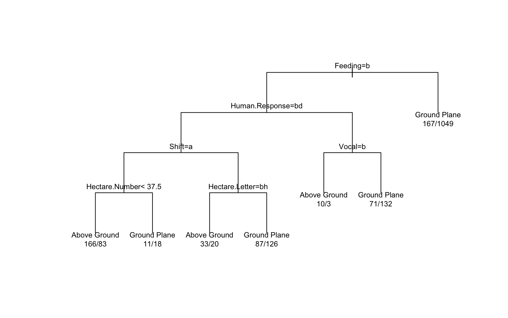
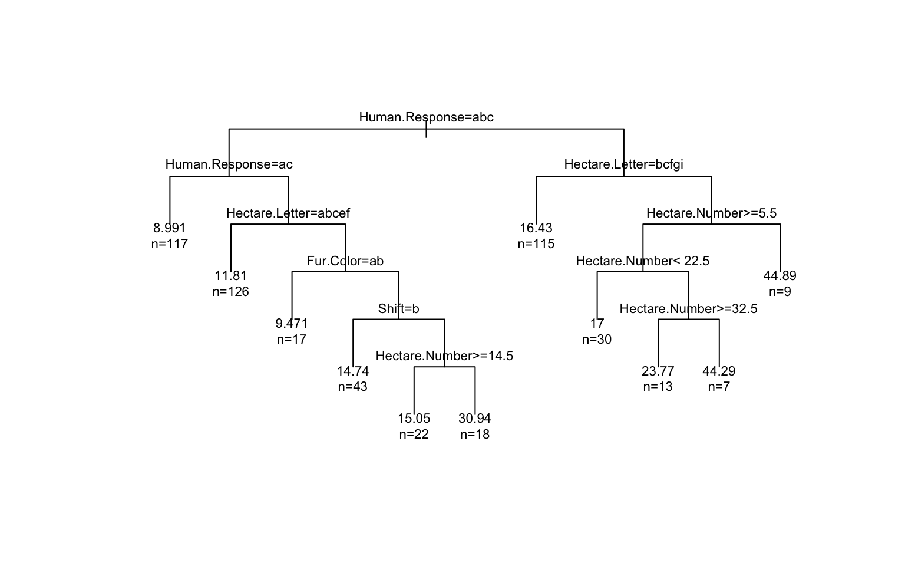

Tree models are helpful here because the squirrel census is full of mixed data types: categorical fur colors, yes/no behaviors, vague human interaction signals, and spatial labels such as hectares. A single tree can turn that messy field data into readable splits, while ensembles let us check whether the same patterns hold up when we average across many trees.
Instead of treating this as a generic modeling exercise, I use tree methods as a field guide:
kable(overview, caption = "Quick overview of the squirrel census data used in this report.")| Measure | Value |
|---|---|
| Total observations | 3023 |
| Distinct hectares | 339 |
| Ground-plane sightings | 2116 |
| Above-ground sightings | 843 |
| Sightings with recorded height | 793 |
This tree treats the park like a behavioral landscape. The goal is to see whether movement, feeding, vocalization, tail signals, and basic location cues help separate squirrels seen on the ground from squirrels spotted above ground.
location_tree <- rpart(Location.Class ~ ., data = train_location, method = "class")
plot(location_tree, uniform = TRUE, margin = 0.08)
text(location_tree, use.n = TRUE, cex = 0.7)
location_pred <- predict(location_tree, test_location, type = "class")
location_metrics <- classification_metrics(test_location$Location.Class, location_pred)
location_importance <- top_importance(location_tree)
kable(location_metrics, caption = "Classification tree performance for predicting squirrel location.")| Accuracy | Kappa |
|---|---|
| 0.749 | 0.271 |
kable(location_importance, caption = "Most influential variables in the location tree.")| Variable | Importance |
|---|---|
| Feeding | 121.25 |
| Active | 56.93 |
| Human.Response | 12.43 |
| Shift | 9.36 |
| Vocal | 6.21 |
| Hectare.Number | 5.25 |
The classification tree helps answer a practical question for field observation: what makes a squirrel more likely to be seen above ground? In this data, active movement and feeding-related behavior matter much more than fur color, which suggests behavior is more informative than appearance for understanding where squirrels position themselves.
Once a squirrel is above ground, the next question is not just whether it climbed, but how high. This regression tree uses the same mix of spatial and behavioral cues to estimate recorded height.
height_tree <- rpart(Above.Ground.Height ~ ., data = train_height, method = "anova")
plot(height_tree, uniform = TRUE, margin = 0.08)
text(height_tree, use.n = TRUE, cex = 0.7)
height_pred <- predict(height_tree, test_height)
height_metrics <- regression_metrics(test_height$Above.Ground.Height, height_pred)
height_importance <- top_importance(height_tree)
kable(height_metrics, caption = "Regression tree performance for above-ground height.")| RMSE | MAE |
|---|---|
| 12.42 | 9.11 |
kable(height_importance, caption = "Most influential variables in the height tree.")| Variable | Importance |
|---|---|
| Hectare.Number | 10877.62 |
| Human.Response | 8211.92 |
| Hectare.Letter | 6634.14 |
| Shift | 1497.91 |
| Fur.Color | 1370.95 |
| Tail.Signal | 331.20 |
This model treats height as a kind of vertical habitat choice. The most important predictors are park position and human-response context rather than simple color categories, which hints that where a squirrel is seen in the park may be more useful than how it looks when we want to explain height.
Rule models are useful when we want a short, readable description instead of a large branching diagram. Here, I predict whether a squirrel is feeding or not feeding from its activity level, location, and other observation cues.
feeding_rules <- C5.0(Feeding ~ ., data = train_feeding, rules = TRUE)
feeding_pred <- predict(feeding_rules, test_feeding)
feeding_metrics <- classification_metrics(test_feeding$Feeding, feeding_pred)
feeding_usage <- as.data.frame(C5imp(feeding_rules, metric = "usage")) %>%
rownames_to_column(var = "Variable") %>%
rename(Usage = Overall) %>%
arrange(desc(Usage)) %>%
mutate(Usage = round(Usage, 2))
kable(feeding_metrics, caption = "Rule-based tree performance for feeding behavior.")| Accuracy | Kappa |
|---|---|
| 0.778 | 0.55 |
kable(head(feeding_usage, 6), caption = "Most-used predictors in the feeding rules.")| Variable | Usage |
|---|---|
| Active | 100 |
| Shift | 0 |
| Age | 0 |
| Fur.Color | 0 |
| Hectare.Number | 0 |
| Hectare.Letter | 0 |
summary(feeding_rules)##
## Call:
## C5.0.formula(formula = Feeding ~ ., data = train_feeding, rules = TRUE)
##
##
## C5.0 [Release 2.07 GPL Edition] Wed Apr 1 21:30:34 2026
## -------------------------------
##
## Class specified by attribute `outcome'
##
## Read 1976 cases (11 attributes) from undefined.data
##
## Rules:
##
## Rule 1: (1019/102, lift 1.5)
## Active = Still
## -> class Feeding [0.899]
##
## Rule 2: (957/298, lift 1.8)
## Active = Active
## -> class Not feeding [0.688]
##
## Default class: Feeding
##
##
## Evaluation on training data (1976 cases):
##
## Rules
## ----------------
## No Errors
##
## 2 400(20.2%) <<
##
##
## (a) (b) <-classified as
## ---- ----
## 917 298 (a): class Feeding
## 102 659 (b): class Not feeding
##
##
## Attribute usage:
##
## 100.00% Active
##
##
## Time: 0.0 secsThe rules are surprisingly compact. In this dataset, activity level does a lot of the work: squirrels that are still are much more often recorded as feeding, while squirrels that are actively running, climbing, or chasing are more often recorded as not feeding. That is exactly the kind of ecological shorthand tree methods are good at surfacing.
A single tree is easy to interpret, but it can be sensitive to how the sample is split. Bagging averages over many trees, which usually gives a more stable answer. I apply bagging to the same ground-vs-above-ground problem used in the first section.
bag_model <- bagging(Location.Class ~ ., data = train_location, nbagg = 25)
bag_pred <- predict(bag_model, test_location)
if (is.list(bag_pred) && "class" %in% names(bag_pred)) {
bag_pred <- bag_pred$class
}
bag_pred <- factor(bag_pred, levels = levels(test_location$Location.Class))
bag_metrics <- classification_metrics(test_location$Location.Class, bag_pred) %>%
mutate(Model = "Bagged trees")
single_tree_metrics <- location_metrics %>%
mutate(Model = "Single tree")
comparison <- bind_rows(single_tree_metrics, bag_metrics) %>%
select(Model, Accuracy, Kappa)
kable(comparison, caption = "Comparing a single location tree with a bagged ensemble.")| Model | Accuracy | Kappa |
|---|---|---|
| Single tree | 0.749 | 0.271 |
| Bagged trees | 0.739 | 0.319 |
The bagged model is only slightly more accurate here, but that comparison is still useful. It suggests that the strongest patterns in this squirrel census are already fairly stable, so the simple tree captures much of the signal while the ensemble adds a small amount of extra reliability.
Tree methods help turn this squirrel census into more than a table of observations. They show that:
That is the main value of tree-based models in a dataset like this one: they do not just predict outcomes, they organize messy field observations into a form that is easier to explain.